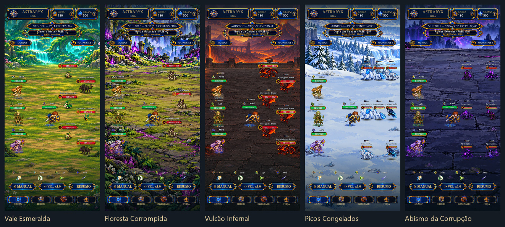

26 NOV 2026 · ANDROID
Astraryx Idle 0.8.7.2
Cenários novos nos cinco mundos, progressão da Forja revisada e um novo kit de bastão para Kharun.

Campanha e interface
As 2.150 fases têm cenários por região, com a arena livre para enxergar os combatentes.
A HUD de combate dá destaque à fase e mostra a Fúria quando o chefe a ativa.
Forja e evolução
A Forja recupera os níveis 50 a 100 e usa materiais disponíveis antes dos chefes correspondentes.
Itens pesados favorecem a defesa física. Itens leves favorecem a defesa mágica. A chance-base de materiais comuns é de 4% por abate.
Ascensão III passa a exigir seis materiais do Mundo 5, com 60 unidades de cada.
Heróis e desempenho
Kharun tem um kit de bastão com esquiva, controle e novos efeitos animados. Lyn ganha força contra alvos isolados.
A atualização foi otimizada para reduzir o custo da interface em batalha.
Atualização no Android
Abra Configurações e toque em Verificar atualizações. Instale o APK sobre a versão assinada que já está no aparelho para conservar seu progresso.